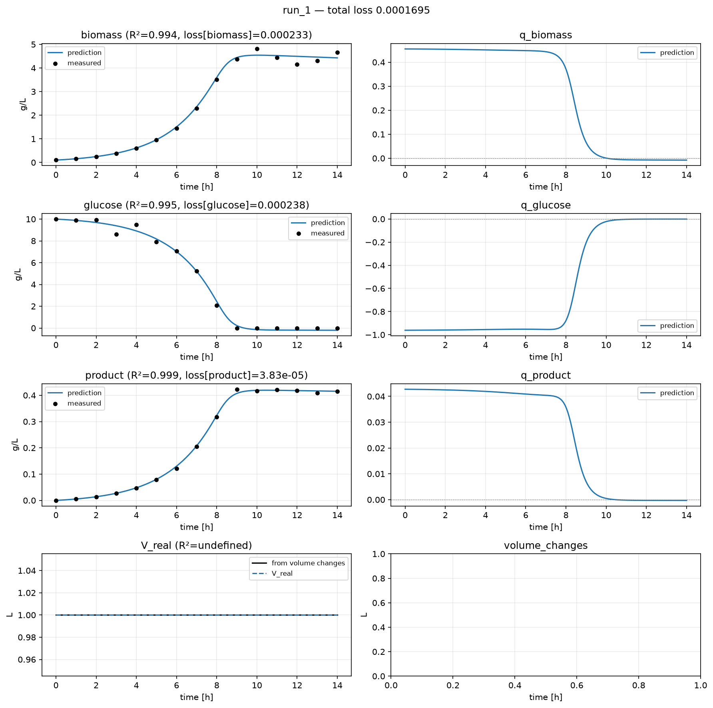
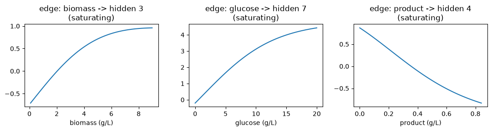

A KAN model¶
A Kolmogorov-Arnold Network (KAN) occupying the reaction module’s slot: each edge between two nodes carries its own learnable curve, instead of a neural network’s fixed activation with learned weights. After training, each edge’s curve is matched against a small shape library and checked against the real process that generated the training data.
Inspired by Bühler & Guillén-Gosálbez 2026 [1], whose SR-KAN
framework builds on Kolmogorov-Arnold Networks [2] to recover
interpretable kinetic rate laws from a batch fermentation case study similar to this
page’s own biomass, glucose, and product data. This page reproduces the core idea,
learnable curves on edges in place of a neural network’s fixed activations, as a single
reaction module trained directly inside hybrax.train’s own loop rather than the
paper’s own two-stage pipeline. It also reuses the paper’s post-training step of
matching each learned edge against a small library of simple curves, stopping short of
the paper’s further step of composing those matches into one closed-form rate law.
The walkthrough below shows the file in pieces, next to the reasoning for each one.
The KAN Layer¶
1class KANLayer(eqx.Module):
2 base_w: jax.Array = trainable_field() # (out, in)
3 spline_c: jax.Array = trainable_field() # (out, in, grid)
4 centers: jax.Array = frozen_field() # (grid,)
5 inv_h2: float = eqx.field(static=True)
6
7 def __init__(self, in_dim, out_dim, grid, key, out_scale):
8 kb, ks = jax.random.split(key)
9 self.base_w = (
10 out_scale * jax.random.normal(kb, (out_dim, in_dim)) / max(in_dim, 1) ** 0.5
11 )
12 self.spline_c = (
13 out_scale
14 * jax.random.normal(ks, (out_dim, in_dim, grid))
15 / max(in_dim, 1) ** 0.5
16 )
17 self.centers = jnp.linspace(-2.0, 2.0, grid)
18 spacing = 4.0 / max(grid - 1, 1)
19 self.inv_h2 = 1.0 / (spacing * spacing)
Per edge (i, o): base_w[o,i]·SiLU(x_i) plus Σ_g spline_c[o,i,g]·rbf_g(x_i), a
small Gaussian radial-basis expansion centered on a fixed grid
[3]. A node’s output is the sum over its incoming edges’
curves, Σ_i φ_oi(x_i), the defining property that makes this a KAN
[2] rather than an MLP: the learnable function lives on
the edge, separate from a fixed node activation. x is tanh-bounded before
hitting the grid, so every edge’s spline term always sees an input inside the
range it was actually fit over.
The Reaction Module¶
1class KANReactionModule(RateModule):
2 l1: KANLayer = trainable_field()
3 l2: KANLayer = trainable_field()
4 prod_a: KANLayer = trainable_field()
5 prod_b: KANLayer = trainable_field()
6
7 def __init__(self, *, key, hidden=8, grid=6, **scale_kwargs):
8 super().__init__(**scale_kwargs)
9 n_in = self.n_modeled_RMCs
10 n_out = self.n_modeled_ReactionOde_rates
11 k1, k2, ka, kb = jax.random.split(key, 4)
12 # Hidden layer full-scale; output layer near-zero so the ODE starts flat
13 # yet both layers receive gradient at step 0 (avoids an all-zero cold start).
14 self.l1 = KANLayer(n_in, hidden, grid, k1, out_scale=1.0)
15 self.l2 = KANLayer(hidden, n_out, grid, k2, out_scale=0.0)
16 # One small multiplicative term per rate, prod_a(h0) * prod_b(h1), added
17 # on top of l2's sum. h0/h1 are the first two of l1's hidden units,
18 # picked arbitrarily since none of l1's hidden units carry individual
19 # meaning. Ordinary non-zero start (unlike l2): a product started at
20 # zero can never move away from zero under gradient descent.
21 self.prod_a = KANLayer(1, n_out, grid, ka, out_scale=1.0)
22 self.prod_b = KANLayer(1, n_out, grid, kb, out_scale=1.0)
23
24 def __call__(self, t, inputs: ReactionInputs) -> ReactionOutputs:
25 del t
26 h = self.l1(inputs.SCL_modeled_RMCs)
27 out = self.l2(h) + self.prod_a(h[0:1]) * self.prod_b(h[1:2])
28 return ReactionOutputs(
29 SCL_modeled_ReactionOde_rates=out,
30 SCL_modeled_Outflows_rates=jnp.zeros(0),
31 SCL_modeled_Inflows_rates=jnp.zeros(0),
32 )
Two stacked KANLayers, both genuinely KAN-shaped, no plain linear or MLP layer
anywhere in between. The input is just the raw SCL_modeled_RMCs
(biomass, glucose, product): no hand-engineered saturation term is fed in
alongside it, so any Monod-like or threshold shape the model ends up using has
to be discovered from state alone. l2’s near-zero initialization keeps the ODE
flat at the very first step while l1 still receives real gradient, the same
cold-start pattern other reaction modules in this gallery use.
Each of the three output rates also gets one small multiplicative term,
prod_a(h0) * prod_b(h1), added on top of l2’s sum. h0 and h1 are the
first two of l1’s eight hidden units, picked arbitrarily since none of them
carry individual meaning. SR-KAN’s own bioprocess case study states plainly
that pure summation was not enough to model its kinetics, and needed
multiplicative units alongside additive ones; this term borrows that same
idea. It is worth saying plainly that this gallery’s own training data does not
actually need it: every rate this page fits turns out to depend on glucose
alone, through a single saturating curve, with nothing multiplicative in the
real process (see Recovering the real rate law
below). The term stays in as a demonstration that the model has this option
available, the same way SR-KAN’s own model does.
prod_a and prod_b start at ordinary, non-zero values, unlike every other
weight in l2, which starts at zero. A product of two values that both start
at zero can never move away from zero under gradient descent, since nudging
one side still leaves the other at zero: multiplication needs a non-zero
starting point the way addition does not.
estimate_all_scales is unchanged from Tutorial 4.
Training¶
2026-08-28 19:11:48 INFO __main__: training complete: first_mean_loss=0.235398 last_mean_loss=0.000211724 delta=-0.235187
run directory: ./source/_data/out/runs/gallery_kan/run
biomass R2 = 0.9966
glucose R2 = 0.9968
product R2 = 0.9988

R² above 0.99 on all three species: the KAN found a good fit to this page’s own
data. Left column: measured points against the integrated trajectory. Right
column: the rates the KAN actually predicted along the way,
q_biomass/q_glucose/q_product, which never enter the loss directly, only
their integral does.
What Each Edge Learned¶

Each panel is one edge, φ_oi(x_i), evaluated directly over that input’s own
observed range and picked as the widest-swinging edge from that input (the
most visually informative one, out of l1’s hidden edges per input), labeled
with its best match against a small shape library (flat, linear, power,
saturating, exponential), scored by fit quality with a threshold below which a
curve is reported as no clean match rather than forced onto the nearest shape.
None of the three panels above are flat or noisy: each shows genuine curvature,
rising or falling then leveling off, the shape a saturating uptake or a fading
effect would actually have.
22 of l1's 24 edges matched one of the 5 shapes cleanly (R2 >= 0.9)
Recovering the Real Rate Law¶
This page’s training data (data.json) comes from
hybrax/docs/source/_data/generate.py’s build_demo_batch, a real,
known kinetic model (Monod growth, fixed biomass yield plus maintenance,
Luedeking-Piret product formation). hybrax multiplies each of the model’s
three predicted numbers by the current biomass automatically, outside the
reaction module entirely, so what the KAN itself needs to learn is a
per-biomass rate. Written that way, all three
true rates reduce to one shape:
(a fixed number) x S / (Ks + S)
a single saturating (Michaelis-Menten) curve in glucose (S) alone, with the
same Ks = 0.05 g/L in all three and nothing depending on biomass or
product. This gives a direct check: feed the trained model synthetic
combinations of the three inputs, picked to isolate one input at a time, and see
whether its own behavior matches.
Biomass and product together move each rate by at most 17.1% of what glucose does.
q_biomass learned: +2.835 * S / (0.943 + S) true: +0.450 * S / (0.050 + S)
q_glucose learned: -2.182 * S / (0.616 + S) true: -1.020 * S / (0.050 + S)
q_product learned: +2.294 * S / (0.684 + S) true: +0.042 * S / (0.050 + S)
Biomass and product barely move any rate, matching the real process. Glucose alone traces a clean saturating curve for all three rates, the right shape. The learned scale and half-saturation numbers above land only roughly near the real ones.
That gap is expected. Training sees only 3
processes here (15 timepoints each, BATCH_RUNS in generate.py), and the
sweep above evaluates the model at input combinations that never occur
together along any single real trajectory, off the narrow path training
actually walked. Forster et al. report a comparable result on a similarly
small, similarly shaped bioprocess dataset: their own symbolic-regression
model picked up an inhibiting effect of product concentration on biomass
growth that the real process did not have, and noted “slight numerical
discrepancies” between its recovered growth surface and the real one, even
after correctly capturing the overall trend
[4]. The aim here is to show that a comparable check runs,
end to end, inside hybrax.train, at a smaller scale than SR-KAN’s own
hyperparameter-tuned pipeline.
Gotchas¶
Inputs are
tanh-bounded before hitting the RBF grid. An untransformed input that wandered past the fitted centers’ range would extrapolate through only the baseSiLUterm, silently losing the spline’s local detail.centersis afrozen_field(), never trained. The grid is fixed; onlybase_wandspline_c, the edge functions’ actual shape, move under gradient descent.l2’s near-zero initialization is what keeps the ODE flat at step 0. Removing it does not error, it just starts training from a wild, effectively random rate prediction.hiddenandgridare real capacity knobs, exactly like a network’s width. Too few edges or basis functions and the model cannot represent the trajectory; too many and every edge pays for a wider, mostly redundant radial-basis expansion.prod_a/prod_bbreak perfectly-flat-at-step-0 for all three rates, since every rate reads throughl2’s shared sum. They start non-zero on purpose (see above), so each rate starts very close to flat rather than exactly flat.
See Also¶
The full, runnable example (custom.py, configs, data) lives in
examples/gallery_kan/ at the repo root, no docs build required. This page’s own
executed run is at ./source/_data/out/runs/gallery_kan/.
The Reaction Module:
auxiliary, and everything else aRateModulecan return.Gaussian process reaction module: another reaction-module architecture, with its own way of reading out what it learned.
Mechanistic Models: a reaction module built from explicit kinetics instead.
References¶
Bühler, M. A., & Guillén-Gosálbez, G. (2026). SR-KAN: A Kolmogorov-Arnold Network guided symbolic regression framework. Computers and Chemical Engineering, 213, 109721. https://doi.org/10.1016/j.compchemeng.2026.109721
Liu, Z., Wang, Y., Vaidya, S., Ruehle, F., Halverson, J., Soljačić, M., Hou, T. Y., & Tegmark, M. (2024). KAN: Kolmogorov-Arnold Networks. arXiv. https://arxiv.org/abs/2404.19756
Li, Z. (2024). Kolmogorov-Arnold Networks are Radial Basis Function Networks. arXiv. https://arxiv.org/abs/2405.06721
Forster, T., Vázquez, D., Müller, C., & Guillén-Gosálbez, G. (2024). Machine learning uncovers analytical kinetic models of bioprocesses. Chemical Engineering Science, 300, 120606. https://doi.org/10.1016/j.ces.2024.120606